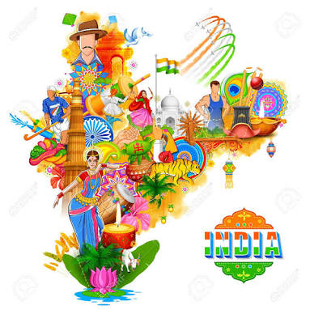

Dance, Music and Art
Dance, Music and Art are an important part of the culture of our country. The people tell stories about their history through these forms of arts
View More"Unity in diversity is India's strength. There is simplicity in every Indian. There is unity in every corner of India. This is our strength." - Narendra Modi
India is a vast country and is considered as a Sub-Continent for its vastness. This sub-continent extending from the Himalayas to the sea is called Bharata-Varsha or the land of Bharata, a famous king of the Puranic tradition. Bharata was the son of king Dushynta and Sakuntala. The Persians of ancient time called the river Indus as Hindhu. The ancient Greeks referred the river Indus as Sindhu. They named this land as India and called its people as Indians. During the Medieval age the writers called this land as Hindustan or the land of the Hindus. The extra ordinary characteristic of this land is that in-spite of all diversity in different fields-physical, social, linguistic, cultural and religious, there is a fundamental thread of unity in the history of India.
Geographically India can be divided into four regions. The first is the Himalayan region or the Northern Mountain wall that extends from Kashmir in the West to Assam in the East. This region includes Kashmir, Kangra, Tehri, Kumaun Nepal, Sikkim and Bhutan. The second region is the great and big Northern Plains which are provided with water by the rivers like Indus, Ganges, Brahmaputra and their tributaries.
View MoreDance, Music and Art are an important part of the culture of our country. The people tell stories about their history through these forms of arts
View MoreThe extreme diversity of physical features presents different kinds of climatic conditions for the inhabitants. India has high mountains, and deserts, plateaus, fertile plains, rivers, valleys and vast sea coasts.
View MoreThe people differ considerably in the social habits. They differ in their dresses, customs, food habits and manners. Different kinds of festivals are observed in different parts of the country by different categories of people.
View MoreThe people of India speak different languages. There are in India separate group of people with their own language. Each of these people’s has its own literature. More than 200 different dialects and languages are used in this vast sub-continent.
View MoreThere is also to be found an equal variety of religions. All the world religions are found here — Hinduism, Buddhism, Jainism, Sikhism, Islam and Christianity. All have their sects and sub-divisions.
View MoreIndia has one of the richest and most exciting cultural tradition in the world our culture goes back several thousands year. That is why ours is known as one of the oldest civilization in the world. India is a land of festivals. There is hardly any month of the year without any festival. Therefore the festivals also play an important in our life & they remains our culture evergreen similarly there are many states in our India, all having their own traditional dress& food also because of all this about India it has be said that India has unity in diversity.
View More